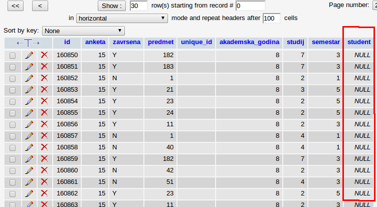
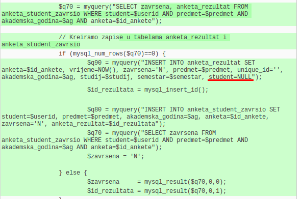
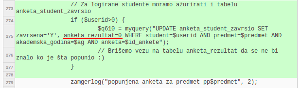
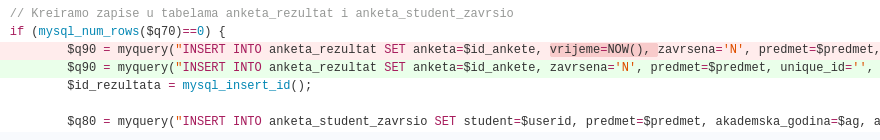

|
ZAMGER 4.3
beta |
Anketa je potpuno anonimna. Kada korisnik pošalje svoj anketni listić on se slaže u bazu anketnih listića odnosno u tabelu koja se zove "anketa_rezultat", ali u toj tabeli polje "student" je prazno. Znači to što je student logiran samo služi da se provjeri da li student ima pravo popuniti anketu za neki predmet i da li je već ranije popunjavao, ostali podaci se ne čuvaju.
|

Screenshot iz glavne baze podataka Zamgera, program phpMyAdmin. Tu se može vidjeti da se u koloni "student" nalazi isključivo vrijednost NULL. |
Zainteresirani mogu baciti pogled na izvorni kod Zamgera koji se nalazi na repozitoriju https://github.com/etf-sarajevo/zamger konkretno interesantan link je ovaj:
U pitanju je izmjena koja je napravljena prije puštanja ankete kako bi bili popravljeni neki bugovi i osigurana anonimnost studenata. Relevantan kod se nalazi u linijama 150 gdje se u tabeli anketa_rezultat pod poljem student postavlja vrijednost NULL i 276 gdje se nakon popunjavanja ankete briše polje anketa_rezultat u tabeli anketa_student_zavrsio. Tabela anketa_student_zavrsio služi kako bi se spriječilo da student dvaput popunjava anketu za isti predmet. U sljedećoj promjeni je izbačen timestamp iz baze:
Studenti koji ne vjeruju da su ove slike vjerodostojne mogu slobodno doći u prostorije službi u toku njihovog radnog vremena i uvjeriti se uživo.
|

Kod koji vrši ubacivanje podatka u tabele "anketa_rezultat" i "anketa_student_zavrsio". Dio podvučen crvenom bojom pokazuje da se u tabelu anketa_rezultat pod student stavlja vrijednost NULL. Tabela anketa_student_zavrsio služi kako bi se spriječilo da isti student dvaput popunjava anketu za neki predmet. |
|

Ovaj dio koda se izvršava kada student pošalje popunjenu anketu. Sada se u tabeli "anketa_student_zavrsio" briše relacija prema tabeli anketa_rezultat kako se ne bi znalo koji student je popunjavao koji anketni listić. |
|

U sljedećoj reviziji je izbačen timestamp iz baze. |
Mnogi studenti predlažu da se anketni kodovi podijele putem maila ili da se student logira kroz Zamger, preuzme kod, napravi logout i zatim popuni anketu.
Nijedan od tih načina nije ništa "anonimniji" od postojećeg. Sistem koji dijeli kodove na osnovu logina ili email adrese može bilježiti kojem studentu je dat koji kod i kasnije na osnovu koda znati ko je šta popunio. Kod popunjavanja ankete na računarima u labu, može se evidentirati sa koje IP adrese je popunjena anketa, IP adresa se može povezati sa računarom, a dežurni asistent može evidentirati ko je sjedio za kojim računarom.
Jedini apsolutno garantovano anoniman pristup je podijela kodova uživo, metodom izvlačenja papirića, što je korišteno u akademskoj 2011/2012. godini. Rezultat je bio katastrofalno loš odziv na anketu. Predstavnici studenata su iznijeli da su se studenti nemarno odnosili prema kodovima, gubili ih ili bacali. Takav sistem je morao biti promijenjen. Smatramo da postojeći sistem daje zadovoljavajući nivo anonimnosti, a studenti koji imaju dvojbi mogu se uvijek obratiti da ostvare uvid u bazu podataka. S druge strane, iz dosadašnjeg rezultata vidimo puno bolji odziv nego 2011/2012. godine.
Anketiranje je dio šireg sistema upravljanja kvalitetom nastavnog procesa. Ovakav mehanizam postoji na većini univerziteta u BiH i svijetu, a dio je i zahtijeva vezanih za akreditaciju. Anketiranje provodi Odbor za upravljanje kvalitetom ETFa čiji su članovi i predstavnici studenata koje imenuje zvanično udruženje studenata ETFa - Steleks. Upoznajte se sa svojim predstavnicima i pitajte ih šta oni rade da bi ankete imale efekta!
Budući da na Univerzitetu u Sarajevu još uvijek ne postoje jasni propisi i procedure za upravljanje
kvalitetom, dosadašnja provedba ankete je bila prije svega u cilju pripreme i obuke svih učesnika
(nastavnika, studenata...) Ipak, fakultet je donio i određene odluke o tome kako postupiti po
rezultatima ankete. O tome više možete pročitati ovdje:
http://www.etf.unsa.ba/index.php?id=157&tx_ttnews[tt_news]=1048&tx_ttnews[backPid]=1&cHash=9782cd8551
Na mnogim univerzitetima studenti su obavezni da popune anketu, odnosno ne mogu dobiti potpis dok ne popune anketni listić. Mislimo da takav stav nije dobar, student ima demokratsko pravo i da odbije popuniti anketu. Ali to pravo treba ostvariti tako što se listić "poništi", odnosno student se treba prijaviti i izabrati opciju "Odbijam da učestvujem u anketi". Ni ovdje neće biti evidentirano KO je odbio učestvovati, nego samo KOLIKO je ukupno studenata odbilo učestvovati. Pozivamo vas da pored klikanja na ovu opciju popunite i polje za komentar da bismo znali zašto niste htjeli dati vaše mišljenje i možda to popravimo ako je moguće.
Ipak, anketa koju popunjavate prije svega treba da pomogne profesorima koji žele da rade kvalitetnije (a to je velika većina). Zato vas molimo da budete iskreni i detaljni u vašem mišljenju!
Prilikom analize ankete uopšte se ne gleda prosjek odgovora na sva pitanja. Takva statistika bi bila beskorisna jer svako pitanje ima svoje značenje. Ukupnu ocjenu predmeta možete dati odgovorom na pitanje "Sveukupna ocjena predmeta".
Osoblje službi Fakulteta i informacionog sistema